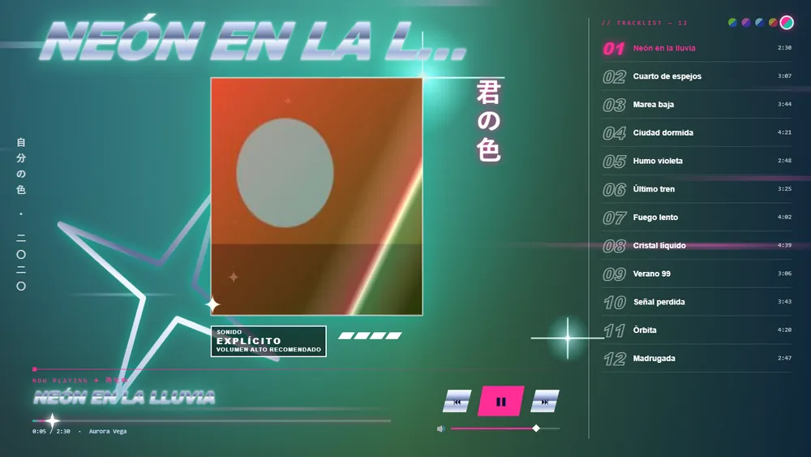
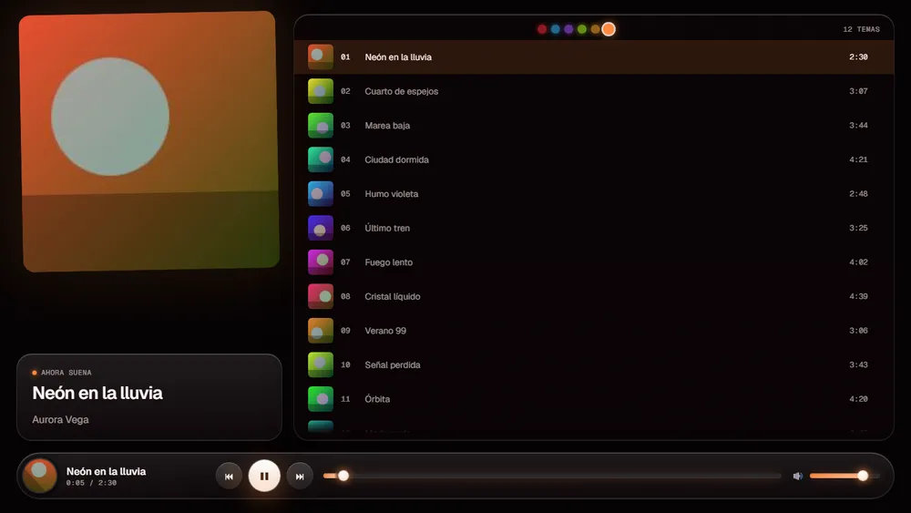
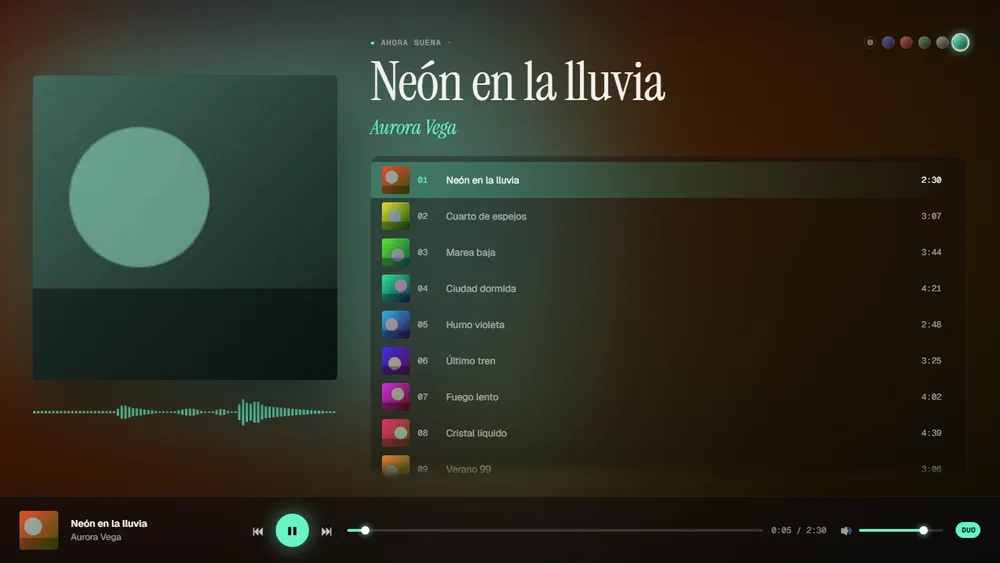

Neo Y2K magenta
por Noull999Neo Y2K en un magenta eléctrico, con la estrella de cromo.
Ajustes · Neo Y2KDescargar
Plantillas que la gente comparte para que su música se vea: colores, fondos y estilos listos para usar.

Neo Y2K en un magenta eléctrico, con la estrella de cromo.

Líquido en naranja de atardecer, más suave y más lento.

Ambiente en verde menta, con el fondo más desenfocado.
Nada coincide con esa búsqueda.